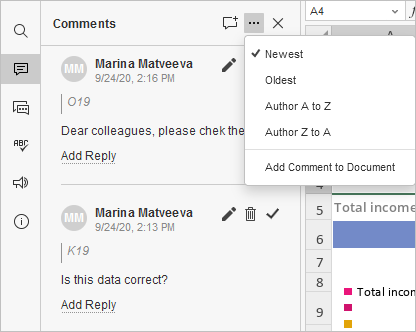

Komentarisanje
Uređivač tabela omogućava vam da održavate stalan timski pristup toku rada: delite datoteke i fascikle, sarađujete na tabelama u realnom vremenu, komunicirate direktno u uređivaču, čuvate verzije tabela za buduću upotrebu.
U Uređivaču tabela možete ostavljati komentare na sadržaj tabela bez njihovog stvarnog uređivanja. Za razliku od poruka u ćaskanju, komentari ostaju dok se ne obrišu.
Dodavanje komentara i odgovaranje na njih
Da biste dodali komentar,
- izaberite ćeliju za koju smatrate da sadrži grešku ili problem,
-
prebacite se na karticu Umetanje ili Saradnja na gornjoj traci sa alatkama i kliknite na dugme Komentar, ili
koristite ikonu na levoj bočnoj traci da biste otvorili panel Komentari, a zatim kliknite na dugme Dodaj komentar na gornjoj traci panela ili kliknite na simbol Više i izaberite opciju Dodaj komentar dokumentu da biste dodali komentar na celu tabelu, ili
kliknite desnim tasterom miša unutar izabrane ćelije i izaberite opciju Dodaj komentar iz menija, - unesite potreban tekst,
- kliknite na dugme Dodaj komentar/Dodaj.
Ako koristite Strogi režim zajedničkog uređivanja, novi komentari koje su dodali drugi korisnici postaće vidljivi tek nakon što kliknete na ikonu u gornjem levom uglu gornje trake sa alatkama.
Da biste videli komentar, jednostavno kliknite unutar ćelije. Vi ili bilo koji drugi korisnik možete odgovoriti na dodati komentar postavljanjem pitanja ili izveštavanjem o obavljenom radu. U tu svrhu koristite vezu Dodaj odgovor, unesite tekst odgovora u polje za unos i kliknite na dugme Odgovori.
Onemogućavanje prikaza komentara
Komentar će biti prikazan u panelu sa leve strane. Narandžasti trougao će se pojaviti u gornjem desnom uglu ćelije koju ste komentarisali. Ako želite da onemogućite ovu funkciju,
- kliknite na karticu Datoteka na gornjoj traci sa alatkama,
- izaberite opciju Napredna podešavanja...,
- isključite polje Uključi prikaz komentara.
U tom slučaju, komentarisane ćelije biće označene samo ako kliknete na ikonu Komentari .
Upravljanje komentarima
Dodate komentare možete upravljati pomoću ikona u balonu komentara ili u panelu Komentari sa leve strane:
-
sortirajte dodate komentare klikom na ikonu :
- po datumu: Najnoviji ili Najstariji
- po autoru: Autor od A do Z ili Autor od Z do A
-
po grupi: Sve ili izaberite određenu grupu sa liste. Ova opcija sortiranja je dostupna ako koristite verziju koja uključuje ovu funkcionalnost.

- izmenite trenutno izabrani komentar klikom na ikonu ,
- obrišite trenutno izabrani komentar klikom na ikonu ,
- zatvorite trenutno izabranu diskusiju klikom na ikonu ako je zadatak ili problem naveden u komentaru rešen; nakon toga diskusija dobija status rešenog. Da biste je ponovo otvorili, kliknite na ikonu . Ako želite da sakrijete rešene komentare, kliknite na karticu Datoteka na gornjoj traci sa alatkama, izaberite opciju Napredna podešavanja..., isključite polje Uključi prikaz rešenih komentara i kliknite na Primeni. U tom slučaju rešeni komentari biće istaknuti samo ako kliknete na ikonu ,
- ako želite da upravljate komentarima grupno, otvorite padajući meni Reši na kartici Saradnja. Izaberite jednu od opcija za rešavanje komentara: reši trenutne komentare, reši moje komentare ili reši sve komentare u tabeli.
Dodavanje pominjanja
Pominjanja možete dodavati samo u komentare vezane za sadržaj tabele, a ne za samu tabelu.
Prilikom unosa komentara možete koristiti funkciju pominjanja koja vam omogućava da skrenete nečiju pažnju na komentar i pošaljete obaveštenje pomenutom korisniku putem imejla i Talk sistema.
Da biste dodali pominjanje,
- unesite znak "+" ili "@" bilo gde u tekst komentara – otvoriće se lista korisnika portala. Da biste pojednostavili pretragu, možete početi da kucate željeno ime u polje komentara – lista korisnika će se menjati dok kucate.
- izaberite potrebnu osobu sa liste. Ako datoteka još uvek nije podeljena sa pomenutim korisnikom, otvoriće se prozor Podešavanja deljenja. Tip pristupa Samo za čitanje je podrazumevano izabran. Promenite ga ako je potrebno.
- kliknite na OK.
Pomenuti korisnik će dobiti imejl obaveštenje da je pomenut u komentaru. Ako je datoteka podeljena, korisnik će dobiti i odgovarajuće obaveštenje.
Uklanjanje komentara
Da biste uklonili komentare,
- kliknite na dugme Ukloni na kartici Saradnja na gornjoj traci sa alatkama,
-
izaberite potrebnu opciju iz menija:
- Ukloni trenutne komentare – za uklanjanje trenutno izabranog komentara. Ako komentar ima odgovore, svi odgovori će takođe biti uklonjeni.
- Ukloni moje komentare – za uklanjanje komentara koje ste vi dodali, bez uklanjanja komentara drugih korisnika. Ako komentar ima odgovore, svi odgovori će takođe biti uklonjeni.
- Ukloni sve komentare – za uklanjanje svih komentara u tabeli koje ste vi i drugi korisnici dodali.
Da biste zatvorili panel sa komentarima, ponovo kliknite na ikonu Komentari na levoj bočnoj traci.